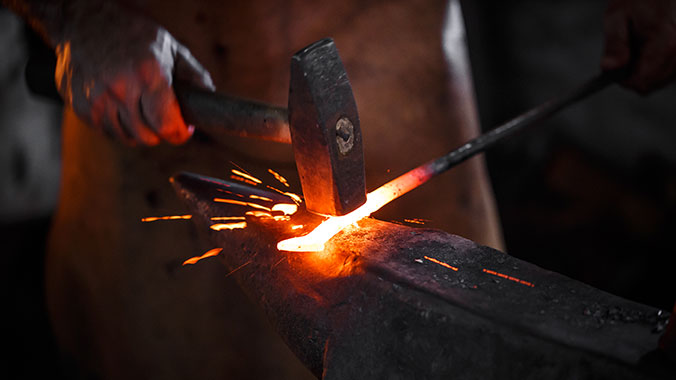

Woulf Hadows
Kendrick began dabbling in video production in March of 2018, with the YouTube channel WoulfShadowGaming.
He goes by the name Woulf while online.
A few of his current most popular videos include
- You've Been Eating Bananas Wrong Your Entire Life
- The Bellsprout Episode | Pokemon Lets Go Episode 2
- Betrayers and Forced Friendship! | SOS Episode 5
- Enter the Bard | SOS the Ultimate Escape 9 ft. Kwolve
The Black- Smith

To get back to his familial roots, Kendrick also spends much of his time working with metals in his garage. Often breaking apart random items for materials to play with.
Some Materials to get started in blacksmithing
- An Anvil (50-250lbs)
- A 4lb Flat-Faced Hammer
- Any sort of heating element (coal/propane grill works well)
- Heat resistant cement
- Thick infalmmable gloves
- Thick iron tongs
- A large vice
- Some sort of directed fan (hair dryer/shop vac)
- Metal to work with
All of these can be purchased
here or
here
Though I think it's better to make your tools yourself.